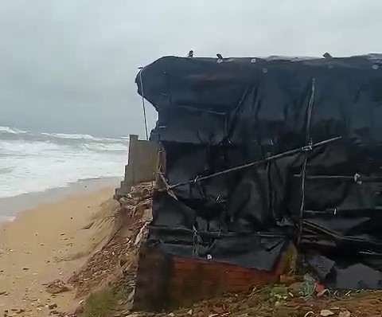

Báo tuổi trẻ thủ đô
Mưa lớn kèm sóng biển mạnh, 200m đường bờ biển sạt lở uy hiếp nhiều hộ dân
TTO - Ngày 8-12, ông Lê Văn Lịch - chủ tịch UBND huyện Phù Mỹ (Bình Định) - cho biết huyện đã chỉ đạo UBND xã Mỹ Thắng sơ tán gần 20 hộ dân trong vùng nguy hiểm đến nơi an toàn khi sóng biển làm sạt lở 200m đường bờ biển, uy hiếp nhiều nhà dân.
Mưa lớn kéo dài kèm theo sóng mạnh làm 200m đường bờ biển xã Mỹ Thắng sạt lở, ăn sâu vào khu vực nhà dân - Ảnh: M.B.
Theo người dân sống tại thôn 9, xã Mỹ Thắng, nhiều ngày qua, mưa lớn kéo dài kèm theo sóng biển rất mạnh đã khiến gần 200m đường bờ biển bị sạt lở, ăn sâu vào đất liền từ 30-40m. Đặc biệt, có những vị trí sạt lở nằm sát vách nhà dân và có nguy cơ cuốn sập các công trình, nhà ở xuống biển.
"Ngay trong đêm 7-12, UBND huyện Phù Mỹ đã yêu cầu chính quyền địa phương huy động lực lượng sơ tán gần 20 hộ dân vùng nguy hiểm đến nơi an toàn. Ngoài ra, lực lượng chức năng được huy động để giăng dây bảo vệ, chốt trực ứng phó với các tình huống sạt lở nguy hiểm", ông Lịch cho hay.

Nhiều vị trí sạt lở nằm sát khu vực nhà dân sinh sống
Theo người dân xã Mỹ Thắng, khu vực bờ biển thôn 9 vốn là bãi ngang, trước nay chưa từng xảy ra tình trạng sạt lở. Đây là lần đầu tiên bờ biển này bị sạt lở.
Theo Ban Chỉ huy phòng chống thiên tai và tìm kiếm cứu nạn tỉnh Bình Định, trong 24 giờ qua, tỉnh có mưa vừa đến mưa rất to, như huyện Phù Cát mưa trên 210mm.
Trong 6 giờ tới, mưa tiếp diễn, nhiều khu vực miền núi, ven biển nguy cơ xảy ra lũ quét trên các sông, suối nhỏ, sạt lở đất trên sườn dốc. Tỉnh Bình Định đã công bố danh sách một số khu vực có nguy cơ xảy ra lũ quét, sạt lở đất đá trong 6 giờ tới gồm 26 xã phường, thị trấn.

Xác minh video xe hơi tông ngã xe CSGT ở quận 5 rồi tháo chạy
TTO - Theo hình ảnh từ video, hai chiến sĩ CSGT dừng xe đặc chủng trước đầu xe hơi màu vàng. Sau đó, người lái xe hơi tông ngã xe đặc chủng của CSGT rồi bỏ chạy hướng về quận 1, xe của CSGT ngã đè lên một xe máy khác của người dân trên đường.
6 phút trước